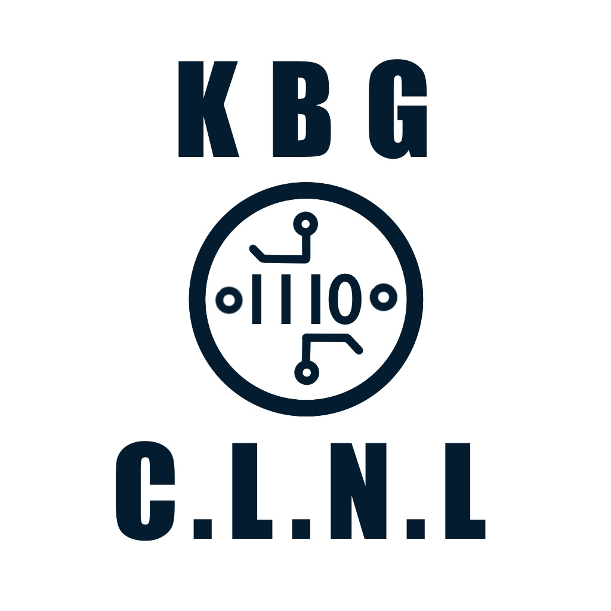

환영합니다!
KBG’s Chinese Linguistics & NLP 연구실은 현대 중국어의
언어 구조와 의미 체계를 다양한 방법론을 통해 과학적으로 분석합니다.
이를 바탕으로 언어학과 기술의 융합을 통해 중국어의 체계적인 이해와
응용 가능성을 넓혀가는 데 중점을 두고 있습니다.
주요 연구 분야
우리 연구실에서는 다음과 같은 분야에서 활발한 연구 활동을 전개하고 있습니다.
- 현대중국어문법 연구
- 코퍼스 기반 텍스트 분석 및 문법 연구
- 언어유형론 및 방언 변이 연구
- 기계번역 및 AI-기반 번역 모델 연구
- 중국어 교육 과정 및 어휘 체계 연구
현대중국어문법
현대 중국어의 통사론 및 의미론적 특성을 이론적·기술적으로 분석.
- 통사 구조 및 문장 유형에 대한 이론적 기술을 연구.
- 기능문법·역할의미이론 등 의미 기반 문법 이론의 적용을 연구.
- 현대 중국어 문법 현상의 공시적·통시적 기술과 유형 비교 분석.
코퍼스 기반 텍스트 분석 및 중국어 문법
실사용 언어 자료에 기반한 통계적·계량적 방법론을 통해 중국어 문법 현상과 언어 사용 양상을 실증적으로 분석.
- 중국어 코퍼스의 설계, 주석 체계 및 언어자원 구축 방법론을 연구.
- 용례 기반 통사·의미 구조의 분포적 특성과 구성 규칙을 분석.
- 문법 이론의 경험적 검증 및 언어 사용 패턴의 계량적 기술을 연구.
언어유형론 및 방언 변이
중국어의 통사·어휘 구조를 중심으로, 방언 간 문법 변이와 유형론적 보편성을 비교·분석.
- 중국어 방언군 간 통사 구조의 변이 양상과 매개 형식을 유형론적 차원에서 분석.
- 지역적 문법 변이와 그 사회언어학적 동인을 유형론적 시각에서 분석.
- 보편 문법과 개별 언어 간의 상호작용을 방언 자료를 통해 이론적으로 검토.
기계번역 및 AI-기반 번역
중국어기반 기계번역의 이론적 구조와 생성 메커니즘을 중심으로 번역 자동화 기술을 분석.
- 기계번역 결과의 담화 일관성과 문맥 적합성 확보 방안 연구.
- 기계번역 품질 제고를 위한 전처리 및 후처리 전략 연구.
- 기계번역 평가 지표의 신뢰성과 텍스트 유형별 성능 차이를 비교 연구.
중국어 교육 과정 및 어휘 체계 연구
중국어 교육의 내용 구조와 어휘 체계를 이론적·의미론적 관점에서 분석.
- 학습자 중심 교육과정의 위계적 구조화와 기능별 분화 기준을 이론적으로 검토.
- 교육 어휘의 의미적 분류, 통사적 속성, 담화 맥락 기반 조직 원리의 체계화 연구.
- 어휘 습득의 인지적 기제와 숙달도 기반 교수·학습 연계 전략을 분석.